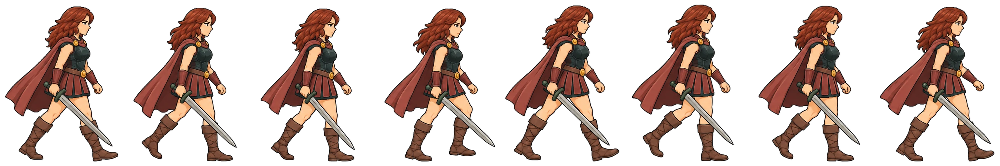

“Este broche conserva el recuerdo de mi madre. Mientras recuerde mi nombre, nadie podrá arrebatármelo”.
Realidad aumentada
Ten a mano el póster, impreso o en otra pantalla. Te pediremos permiso para usar la cámara.
Un juego de Ana Elizabeth Novoa Aguilar
“Este broche conserva el recuerdo de mi madre. Mientras recuerde mi nombre, nadie podrá arrebatármelo”.
